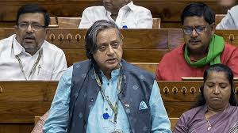
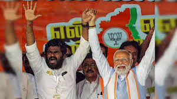
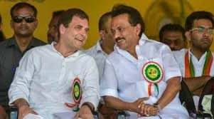
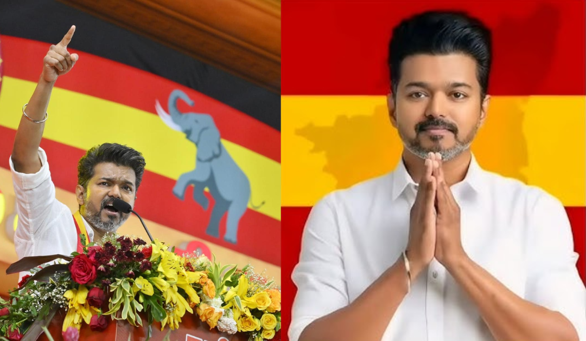

Politics News Today highlights: In today’s complex political climate, understanding the latest developments is essential. Our Politics News delivers comprehensive coverage of government actions, policy changes, and significant political events both nationally and globally. Whether it’s legislative reforms, political debates, or diplomatic talks, we provide in-depth analysis and timely updates to keep you informed. Our goal is to offer a clear perspective on the issues, leaders, and decisions that impact daily life, connecting you to the heart of political discourse and ensuring you stay informed about the matters that shape society 
At a time when the DMK is targeting the three-language formula, accusing the Centre of trying to impose Hindi on Tamil Nadu, and also rejecting the idea of delimitation as detrimental to the interests of the state, BJP Tamil Nadu president K Annamalai tells The Indian Express in an interview that DMK leaders run schools where Hindi is taught but want to deny the same to government school students. Annamalai says he is still not wearing any footwear as he has vowed not to till the DMK is “ousted in 2026”. Excerpts: The DMK says delimitation will harm the South. A Raja has asked whether Union Home Minister Amit Shah meant the proportion of seats or population when he talked about delimitation on a pro-rata basis. What is your take on the controversy? Not only Tamil Nadu Chief Minister Thiru M K Stalin but the entire party seems to be hallucinating, raising questions based on imaginary fears. Unfortunately, these people continue to raise this question despite our honourable Home Minister Thiru Amit Shah clarifying that the delimitation exercise will be done on a pro-rata basis and no states will suffer. Anyway, last time I checked, A Raja was still a Lok Sabha MP. What stopped him or his colleagues from raising this question in the House in the last Budget session? Are they afraid of being exposed? 
WHILE DMK chief and Tamil Nadu Chief Minister M K Stalin seeks to take the lead in voicing the apprehension of the Southern states over delimitation, the other parties in the INDIA bloc are keeping a cautious watch. The Congress, the de facto leader of the Opposition bloc with its pan-Indian footprint, has so far not made an official statement on delimitation, with only its chief ministers in Karnataka and Telangana taking a stand over the issue, which has put the party at a crossroads. The Congress is currently in power only in three states, two of which are the South Indian states of Karnataka and Telangana. The party is striving to make a comeback in the Kerala Assembly elections next year. It has firmly backed the DMK-led alliance in Tamil Nadu for years now. And even 40 of its 99 Lok Sabha seats are from the four Southern states. Retaining and growing its base in the South, therefore, is critical for the party.It cannot alienate the North as well by framing the delimitation issue purely on geographical lines. Which is why, for the time being, the Congress appears to be comfortable in letting Karnataka CM Siddaramaiah and his Telangana counterpart Revanth Reddy articulate the fears of the Southern states on delimitation. The contention of the Southern states is that if the delimitation exercise is carried out on the basis of a fresh Census, their representation in Parliament would decrease significantly in comparison to the Northern states. Congress leaders from Uttar Pradesh, Bihar and Rajasthan told The Indian Express that the party need not take a stand on delimitation now, given that the exercise will only begin after the Census takes place. The Census, which is supposed to happen every decade, last took place in 2011. 
Tamilaga Vettri Kazhagam (TVK) chief and actor Vijay raised concerns over the proposed delimitation process, urging fairness and public consultation. In a five-page statement, he emphasised that his party is not against delimitation but stressed that no state should lose its rightful representation in Parliament due to constituency redistribution.Vijay argued that instead of simply increasing the number of parliamentary seats in the 543-member Lok Sabha, alternative solutions should be explored. He suggested leveraging technology, enhancing governance mechanisms, and ensuring better ballot representation to address issues of representation. The focus, he said, should be on public welfare, industrial growth, quality education, and sustainable development, rather than just expanding the number of MPsHighlighting global democratic practices, Vijay pointed out that several parliaments have provisions like the "Prime Minister's Question Time," where leaders directly address representatives’ concerns. However, in India, he noted, such structured opportunities for direct political accountability are lacking. He questioned whether increasing the number of MPs alone would lead to better governance, asserting that fundamental issues like political integrity, accountability, and direct public engagement must be addressed first. “The issue is not about the shortage of MPs.” The real concern is not the number of representatives but ensuring fair democratic representation. This is a matter of principle rather than just a numerical increase in seats,” he said. 